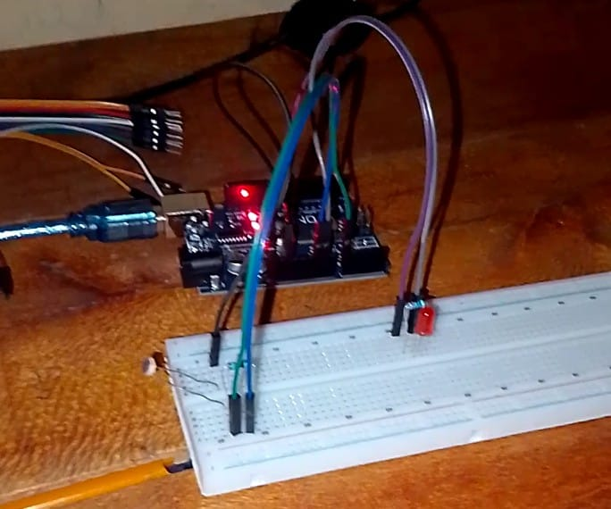

Project Overview

The system automatically turns ON an LED in darkness And OFF in bright light using an LDR voltage divider.
Components Used
- Arduino Uno
- LED
- 220Ω Resistor
- LDR
- 10kΩ Resistor
- Breadboard
- Jumper Wires
How It Works
The LDR changes resistance based on light:
- Bright light - Low resistance
- Darkness - High Resistance
- Read light level
- If dark - turn LED ON
- if bright - turn LED OFF
Arduino Code
#define LDR_PIN A0
#define LED_PIN 9
#define THRESHOLD 400
void setup() {
Serial.begin(9600);
pinMode(LED_PIN, OUTPUT);
Serial.println("Automatic Night Light System Started");
}
void loop() {
int lightValue = analogRead(LDR_PIN);
Serial.print("Light Level: ");
Serial.println(lightValue);
if (lightValue < THRESHOLD) {
digitalWrite(LED_PIN, HIGH);
Serial.println("Dark detected - LED ON");
} else {
digitalWrite(LED_PIN, LOW);
Serial.println("Light detected - LED OFF");
}
delay(500);
}